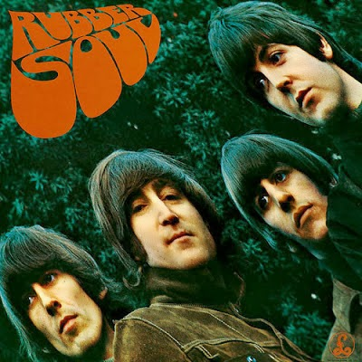
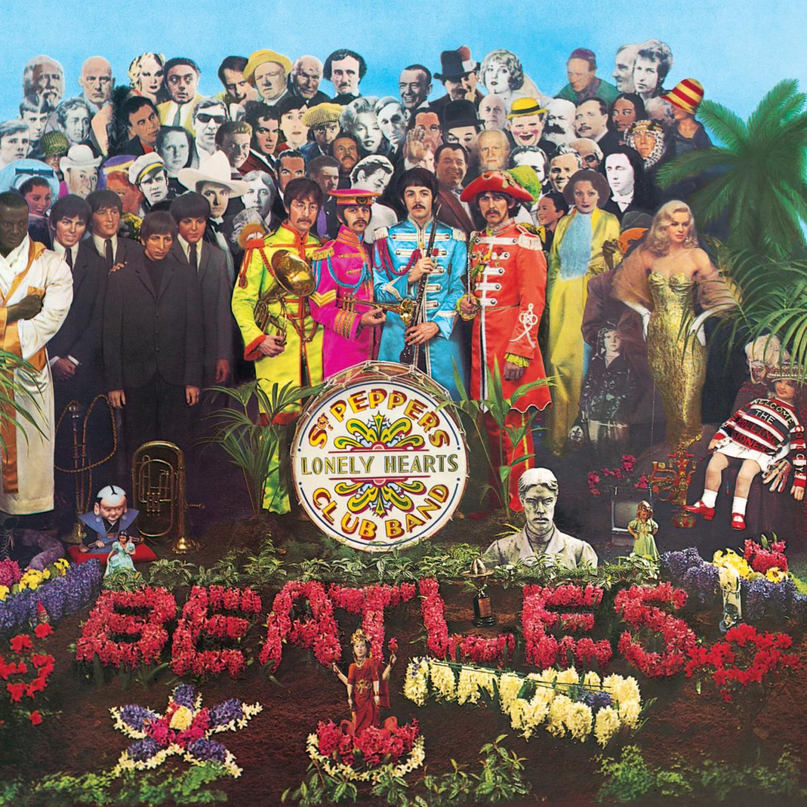

Inicios Revolucionarios: 1963-1964
Please Please Me (1963)

Lanzamiento que marcó el comienzo de la Beatlemanía en el Reino Unido. Grabado en una sola jornada laboral de 13 horas, este álbum introdujo clásicos como "Love Me Do" y "Twist and Shout".
- Sencillos destacados: "Love Me Do", "Please Please Me"
- Recepción: Alcanzó el primer lugar en el Reino Unido casi inmediatamente.
With The Beatles (1963)

Seguido por su primer álbum, este trabajo consolidó la fama de la banda con hits como "All My Loving". Fue el primer álbum británico en vender un millón de copias.
- Sencillos destacados: "All My Loving", "It Won't Be Long"
- Recepción: Criticado por su calidad de producción, pero celebrado por su innovación musical.
A Hard Day's Night (1964)

El primer álbum compuesto íntegramente por Lennon-McCartney, y banda sonora de su película homónima, mostró la evolución musical del grupo hacia temas más complejos y personales.
- Sencillos destacados: "All My Loving", "It Won't Be Long"
- Recepción: Criticado por su calidad de producción, pero celebrado por su innovación musical.
Experimentación y Madurez: 1965-1967
Rubber Soul (1965)

Este álbum marcó un cambio significativo en el sonido de la banda, con una mayor influencia de la música folk y letras más introspectivas.
- Sencillos destacados: "Norwegian Wood", "Michelle"
- Recepción: Considerado un punto de inflexión en la música pop, introduciendo elementos exóticos como el sitar.
Revolver (1966)

Con "Revolver", The Beatles exploraron aún más los límites del estudio de grabación, utilizando técnicas innovadoras de producción.
- Sencillos destacados: "Eleanor Rigby", "Yellow Submarine"
- Recepción: Ampliamente aclamado, estableció nuevos estándares para lo que se podía esperar de la música pop.
Sgt. Pepper's Lonely Hearts Club Band (1967)

Este álbum conceptual no solo fue un hito en la carrera de The Beatles sino en la historia de la música, celebrado por su innovación estilística y producción compleja.
- Sencillos destacados: "Lucy in the Sky with Diamonds", "A Day in the Life"
- Recepción: Ganador de cuatro premios Grammy, ha sido top en numerosas listas de "los mejores álbumes".
Evolución y Disolución: 1968-1970
The Beatles (White Album) (1968)
Un doble álbum que destaca por su diversidad de estilos, desde el folk hasta el hard rock y el avant-garde.
- Sencillos destacados: "While My Guitar Gently Weeps", "Blackbird"
- Recepción: A pesar de las tensiones internas que reflejaba, fue un éxito comercial y crítico.
Let It Be (1970)

Originalmente concebido como un retorno a sus raíces musicales, este álbum fue finalmente producido por Phil Spector y publicado tras la disolución de la banda.
- Sencillos destacados: "Let It Be", "The Long and Winding Road"
- Recepción: Recibió críticas mixtas por su producción, pero incluye algunas de las canciones más queridas del grupo.
Cada uno de estos álbumes no solo documenta la evolución musical de The Beatles, sino que también encapsula una era de grandes cambios culturales y sociales. Invitamos a los visitantes a explorar cada álbum en detalle y descubrir más sobre el contexto histórico, las anécdotas de grabación, y su legado duradero en la música moderna.